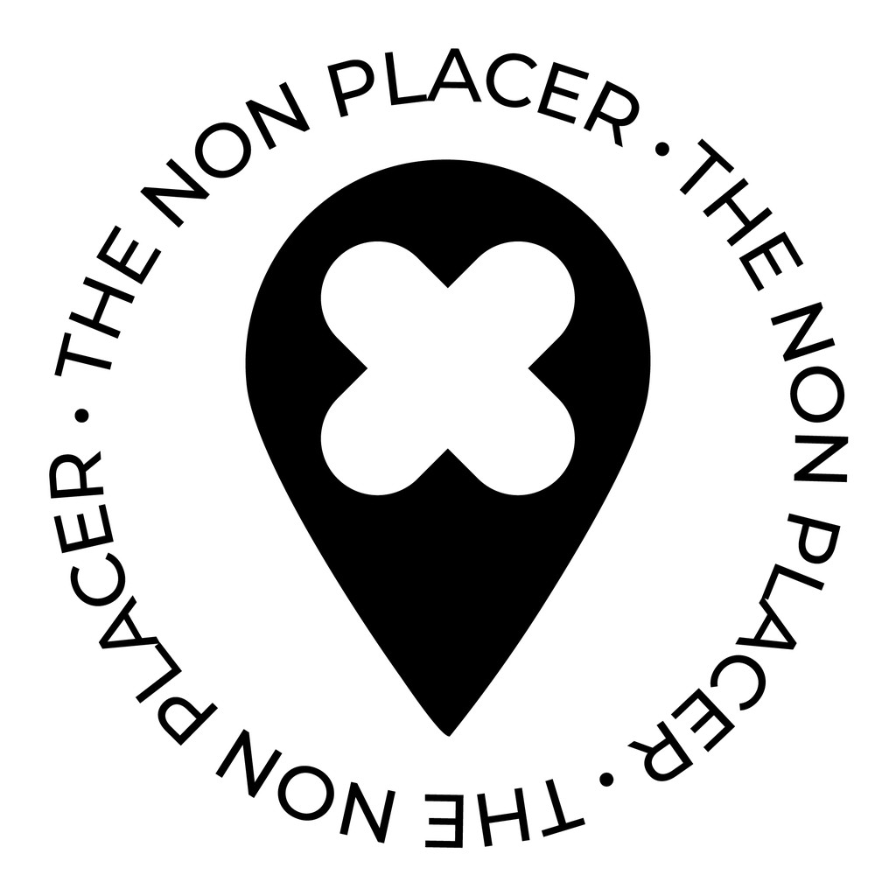

The Non Placer (@thenonplacer su Instagram) è un progetto artistico personale di Francesco Riccardi: le opere degli artisti diventano copertine di una rivista immaginaria, pubblicate su Instagram in collaborazione con l'artista. Contatto: thenonplacer@gmail.com.
Non vendiamo né cediamo i tuoi dati, non li usiamo per pubblicità.
Google (Drive, Fogli, Gmail e Gemini API per il controllo delle immagini), Meta (API di Instagram per pubblicare e rispondere ai messaggi), GitHub Pages e Netlify (hosting della pagina e delle immagini da pubblicare).
Finché il progetto è attivo o finché non ci chiedi di cancellarli. Le copertine pubblicate restano su Instagram finché non chiedi di rimuoverle.
Puoi chiedere in qualsiasi momento di vedere, correggere o cancellare i tuoi dati (e di rimuovere la copertina): scrivi a thenonplacer@gmail.com oppure un DM a @thenonplacer con «cancella i miei dati». Lo facciamo entro 30 giorni e te lo confermiamo. Puoi anche ritirare una candidatura dal link presente nelle email.
Hai i diritti previsti dal GDPR (accesso, rettifica, cancellazione, limitazione, opposizione, portabilità) e puoi rivolgerti al Garante per la protezione dei dati personali.
The Non Placer (@thenonplacer on Instagram) is a personal art project by Francesco Riccardi: artists' works become covers of an imaginary magazine, published on Instagram in collaboration with the artist. Contact: thenonplacer@gmail.com.
We never sell or share your data and never use it for advertising.
Google (Drive, Sheets, Gmail and the Gemini API for image checks), Meta (Instagram API to publish and reply to messages), GitHub Pages and Netlify (hosting of this page and of the images to be published).
As long as the project is active or until you ask us to delete it. Published covers stay on Instagram until you ask us to remove them.
You can ask at any time to access, correct or delete your data (and to remove your cover): write to thenonplacer@gmail.com or send a DM to @thenonplacer saying "delete my data". We do it within 30 days and confirm it to you. You can also withdraw a submission from the link in our emails.
You have the rights provided by the GDPR (access, rectification, erasure, restriction, objection, portability) and you can lodge a complaint with the Italian Data Protection Authority (Garante per la protezione dei dati personali).